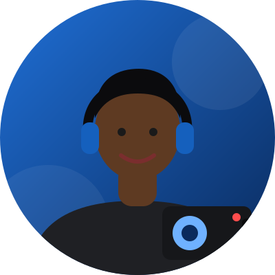

Plus qu'une chaîne, une vision
Une chaîne ivoirienne née pour informer autrement
Inter TV est une chaîne de télévision basée à Abidjan, en Côte d'Ivoire. Portée par une jeune équipe passionnée, elle s'est donné pour mission de couvrir l'actualité locale, nationale et internationale, tout en valorisant la culture, la société et le divertissement ivoiriens.
Reportages de terrain, interviews, captations d'événements et diffusions en direct : Inter TV se construit jour après jour au plus près de sa communauté, avec l'ambition de devenir une référence de l'information « autrement ».

Informer • Éduquer • Inspirer • Divertir
Rigueur
Une information vérifiée, traitée avec professionnalisme.
Proximité
Une chaîne ancrée dans sa communauté et son territoire.
Créativité
Des formats originaux pour raconter l'actualité autrement.
Engagement
Éduquer et inspirer pour un impact positif et durable.

Les grandes étapes d'Inter TV
Naissance du projet Inter TV
Lancement de la chaîne à Abidjan avec une ambition claire : informer autrement.
Premiers reportages et couvertures terrain
Multiplication des reportages, interviews et couvertures d'événements (dont la « Tournée Cohésion »), et développement de la présence sur Facebook et TikTok.
Une chaîne en pleine croissance
Inter TV élargit son audience et structure son offre de programmes, de services et de diffusion en direct.
Vers une diffusion élargie
Développement du direct en ligne et de nouveaux formats pour toucher une audience toujours plus large.
Les femmes et les hommes d'Inter TV
Une équipe polyvalente : rédaction, réalisation, technique et communication, mobilisée au quotidien pour faire vivre la chaîne.
Direction
Rédaction

Réalisation
Communication
Envie de rejoindre l'aventure Inter TV ?
Journalistes, techniciens, partenaires : contactez-nous.